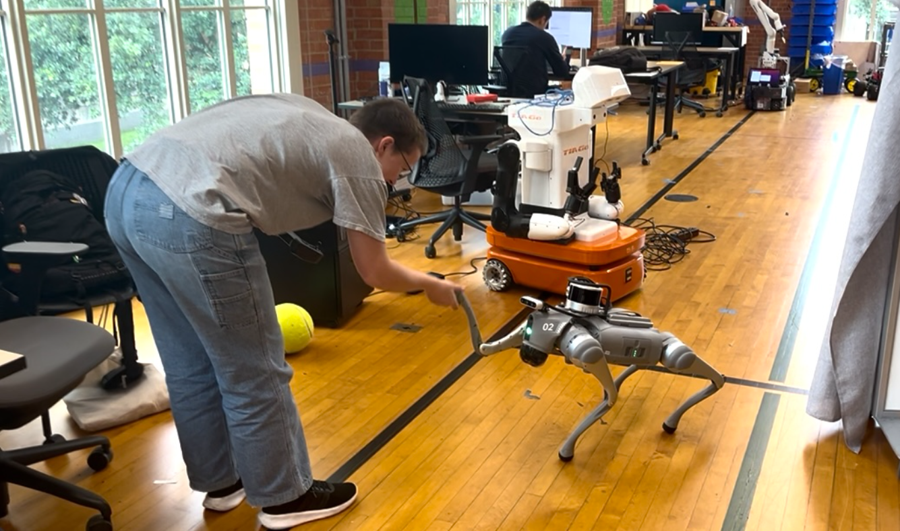
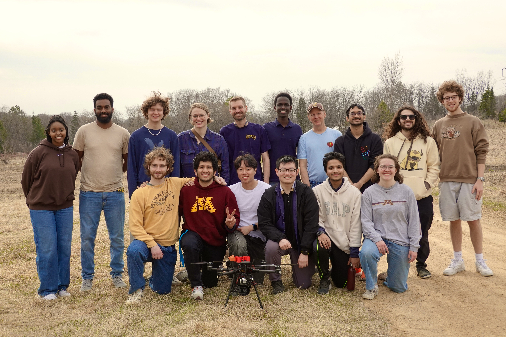

Reinforcement learning, simulation, and real robots
Researched reinforcement learning for quadruped locomotion with the Unitree Go2.
Developed simulation environments and utilized reward design to achieve walking behavior.
Built workflows connecting simulation with real-robot control for Sim-to-Real transfer.
Github for setting up an environment for communicating with a Go2 quadruped robot can be
found here.
Github for training walking behavior for a Go2 in MuJoCo simulation using Stablebaselines3
PPO and SAC (and other policy gradient algorithms) can be found
here.

Applied robotics in agriculture
Participated in the Farm Robotics Challenge,
to develop an award-winning system FarmGuard, which was designed to reduce deer intrusion in agricultural fields.
Worked to combine hardware, computer vision, and path planning to effectively patrol and protect farmlands in
collaboration with a local farmer.

Fall Symposium Presentation
I presented this work at the University of Minnesota Undergraduate Research Symposium, highlighting the motivation,
setup, and early platform results that enable future experiments in embodied evolution and reinforcement learning
on physical TurtleBot3 robots. Additionally, you can read the abstract for this project below.
Social Learning and Behavioral Plasticity in Multi-Agent Robot Systems through Reinforcement Learning and Embodied Evolution
A key objective in artificial intelligence and robotics is to develop systems capable of autonomous decision-making and adaptation
to dynamic environments. Evolutionary robotics, a sub-field of robotics, aims to achieve this by drawing inspiration from natural
evolution and applying principles of gene selection and variation within robots to enable adaptation. Embodied evolution, a subset
of evolutionary robotics, distinguishes itself from other evolutionary algorithms by distributing control among the robots rather
than centrally, allowing for asynchronous, autonomous, and continuous evolution. Reinforcement learning is a method for agents to
learn autonomously based on trial-and-error learning. Researchers suggest that combining reinforcement learning with embodied evolution
may enhance robotic collectives' adaptability in dynamic settings, an idea inspired by studies of behavioral plasticity and social
learning in animal populations. This research takes an essential step toward testing these ideas in physical systems rather than
simulations, which are commonly used but fail to address many real-world complexities. Using TurtleBot3 robots equipped with Raspberry
Pi 4 and 5 modules, this work involved constructing the robots, equipping them with hardware, and setting up ROS 2 as a foundational
environment for implementing reinforcement learning and embodied evolution. While the theoretical algorithms remain to be tested, this
groundwork is crucial for transitioning these concepts from simulation to reality. The emphasis on physical deployment ensures that the
challenges and nuances of real-world applications, often overlooked in simulation, are addressed, paving the way for adaptive robotic
systems with greater practical utility.